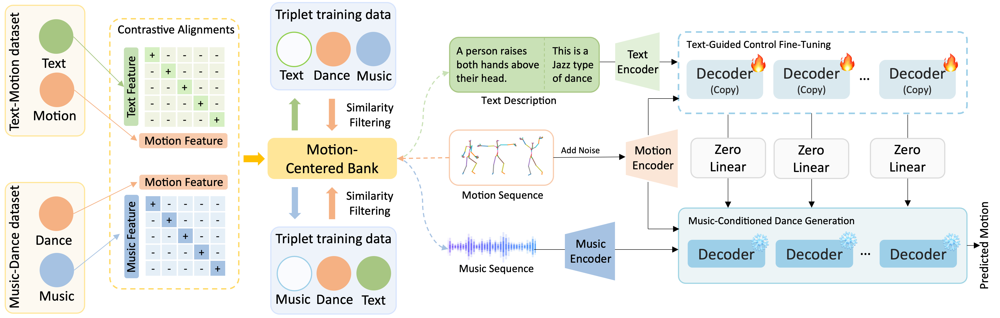
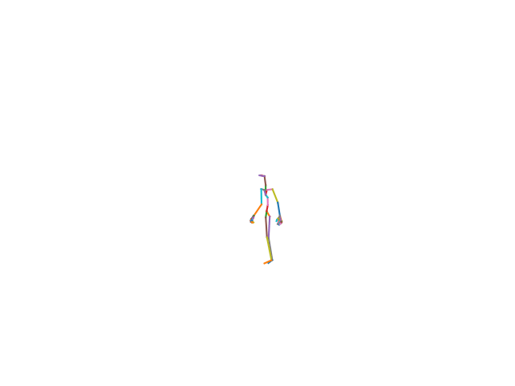
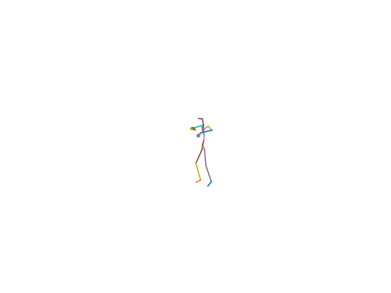
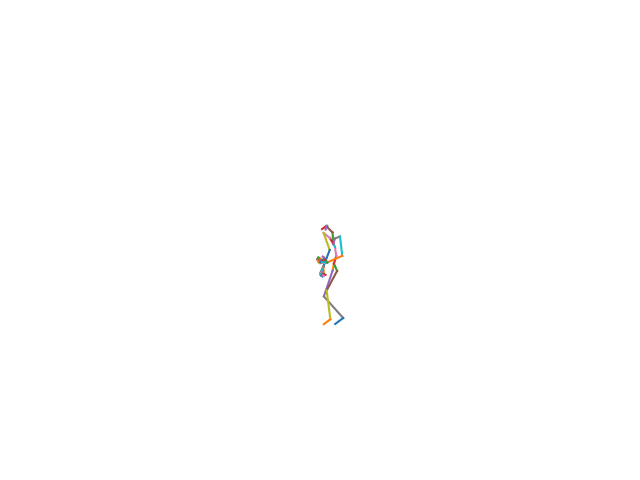

Our model jointly conditions dances on music and text, producing sequences that are both rhythmically aligned and semantically controllable.
Existing music-driven dance generation approaches have achieved strong realism and effective audio-motion alignment. However, they generally lack semantic controllability, making it difficult to guide specific movements through natural language descriptions. This limitation primarily stems from the absence of large-scale datasets that jointly align music, text, and motion for supervised learning of text-conditioned control. To address this challenge, we propose TeMuDance, a framework that enables text-based control for music-conditioned dance generation without requiring any manually annotated music–text–motion triplet dataset. TeMuDance introduces a motion-centred bridging paradigm that leverages motion as a shared semantic anchor to align disjoint music–dance and text–motion datasets within a unified embedding space, enabling cross-modal retrieval of missing modalities for end-to-end training. A lightweight text control branch is then trained on top of a frozen music-to-dance diffusion backbone, preserving rhythmic fidelity while enabling fine-grained semantic guidance. To further suppress noise inherent in the retrieved supervision, we design a dual-stream fine-tuning strategy with confidence-based filtering. We also propose a novel task-aligned metric that quantifies whether textual prompts induce the intended kinematic attributes under music conditioning.
We pretrain a music-conditioned diffusion backbone, then bridge disjoint music–dance and text–motion datasets through a shared motion-centred embedding space to retrieve missing modalities on the fly. A lightweight text control branch is fine-tuned on top of the frozen backbone, enabling semantic steering without sacrificing rhythmic fidelity.

Adjusting the guidance scale at inference yields a continuum of behaviours, ranging from text-only generation, to music-only generation, and to joint text-music generation.

Prompt: "Walk around"
Generation under a null music condition.

Generation without text residual injection.

Prompt: "Walk around"
Both conditioning pathways are active.
Unlike previous methods restricted to coarse genre labels, TeMuDance introduces precise, fine-grained semantic steering into music-driven dance. Our framework uses a composite instruction strategy to align global stylistic cues with explicit local actions.
Precisely specify concrete movements — from spatial trajectories like “walks clockwise in a circle” to explicit poses like “kicking with his left leg” — and seamlessly integrate them into the choreographic flow.
Steer the overall dance genre through text. To isolate genre-level steering, each set below fixes the input music and varies only the genre prompt, allowing the model to adapt the same music track into entirely different choreographic styles based on language prompts.
“This is a Locking-style dance.”
“This is a HanTang-style dance.”
“This is a Hiphop-style dance.”
“This is a Choreography-style dance.”
“This is a Classic-style dance.”
“This is an Locking-style dance.”
With textual conditioning turned off, the frozen backbone alone produces coherent, beat-aligned choreography across six genres — Classical, Breaking, Dai, Popping, Jazz, and Urban.
TeMuDance brings fine-grained textual control to music-driven 3D dance generation without requiring paired music–text–motion triplets. By bridging disjoint datasets through motion-centred contrastive alignment and attaching a lightweight control branch to a frozen backbone, our framework enables precise action execution and global stylistic steering while preserving high rhythmic fidelity.